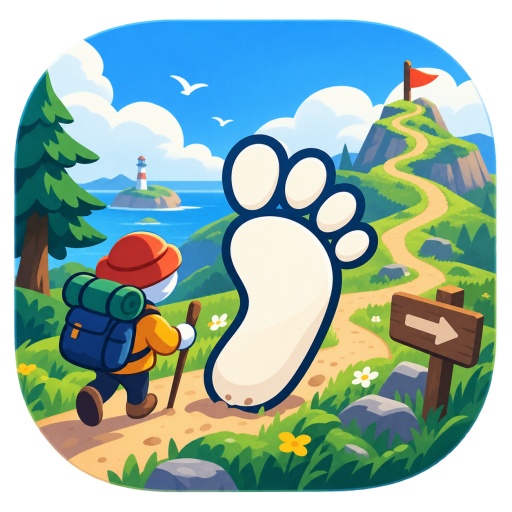

Big.Walk
合作解谜 · 2–12 人 · 2026-08-04 上线
Big Walk
一款关于和朋友「边走边聊」的游戏——它既是一场大冒险，也是一个可以闲逛的好地方。由《捣蛋鹅》开发商 House House 打造。
01 — 关于游戏
Big Walk 是什么？
Big Walk 是一款合作在线多人解谜冒险游戏，主题是和朋友一起边走边聊。它由 House House——墨尔本的《捣蛋鹅》工作室——开发，Panic 发行，于 2026 年 8 月 4 日上线。
在 2 到 12 人的小队里，你们一起穿越一座灵感来自澳大利亚内陆的广袤手工岛屿，共同解谜、揭开秘密。游戏里没有任务标记、体力条或血条——每一次发现都由你们自己完成。
这个世界是手工打造的，每个角落都像有设计意图。岛上散布着无线电电台，每个电台播放专属歌曲，你可以把它带上旅途。没有大段的剧情说明——玩家们常会给角色起自己的昵称，甚至为谜题发明专属词汇。
游戏有明确的结局，并非无限游玩的类型；但和不同的朋友一起，它依然充满吸引力。
02 — 平台与价格
在哪些平台玩？
Steam
PC / Mac
Windows 与 Mac（含 Mac App Store）
· 跨平台联机
· 跨平台联机
PlayStation 5
PS5
PlayStation Plus Essential 首发入库 · 跨平台联机
Switch 2
Nintendo Switch 2
跨平台联机 · 暂无其他平台计划
首发价 $19.99 美元，限时首发 75 折。支持跨平台联机。
03 — 新手引导
怎么玩？
-
2 到 12 人，纯多人
没有单机模式。Big Walk 完全围绕合作与交流设计。
-
房主选择世界版本
房主会选 2 人、3 人或 4+ 人版本的世界，这也代表队伍的最低人数；房主维护世界存档，队友可随时加入或离开。部分谜题会随人数调整。
-
务必用近距离语音聊天
游戏的核心就是和朋友交谈。改用 Discord 或 Steam 语音会绕开解谜的设计，让游戏变差。
-
手持道具
对讲机、手电筒、扩音器——有用，但通常不是必需。背包空间有限：想把纸质地图拿出来看，得让队友帮你卸下背包。
-
没有任务标记
没有任务标记、体力条或血条——靠探索、尝试，和队友一起想办法。
-
理想人数
人少时游戏更专注协作；接近 12 人则是有趣的混乱。任何人数都好——开发者并没有设定所谓「最佳人数」。
04 — 兑换码
兑换码
暂无
目前没有已知有效的 Big Walk 兑换码或促销码。
05 — 官方链接